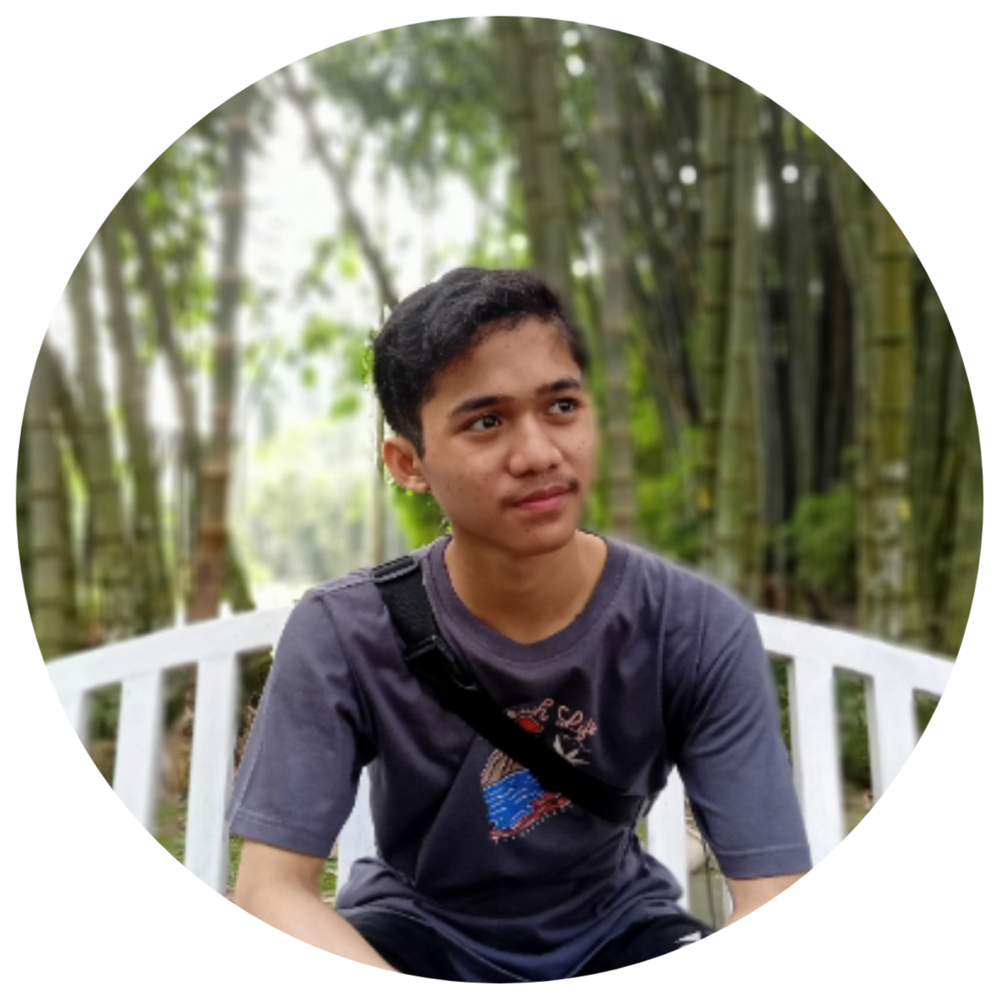

Nama Lengkap : Muhammad Ihqbal Hidayatullah
Nama Panggilan : Ihqbal
Tempat/Tanggal Lahir : Bogor/20 Mei 2004
Usia : 17 tahun
Hobi : Sepak bola, bulutangkis, bersepeda
Motto Hidup : "Bisa Karena Biasa"
Sekolah : SMK-SMAK Bogor
Assalamu'alaikum teman-teman.Hello apa kabar? semoga teman-teman senantiasa dalam keadaan sehat ya.Nah di kesempatan kali ini,di website yang pertama kali saya buat,saya ingin meperkenalkan diri saya terlebih dahulu.Karena seperti pepatah, "tak kenal maka tak kenal" .So, buat kalian yang pengen tau siapakah saya? Yuk disimak profil diriku ini.
Nah temen-temen,dikesempatan kali ini,saya ingin berbagi sedikit pengalaman saya selama Pembelajaran Jarak Jauh (PJJ) selama Pandemi Covid-19 yang sampai sekarangpun masih berlangsung.Di masa pandemi Covid-19 ini,yang sudah berlangsung lebih dari 1 tahun lamanya,tentunya banyak orang yang sudah mulai merasa jenuh dan gelisah akan keadaan saat ini.Segala hal yang tadinya diperbolehkan dengan bebas,kini semua hal itu menjadi hal yang penuh dengan pembatasan.Menurut saya sebagai seorang pelajar,sebenarnya dalam menghadapi pandemi Covid-19 ini,baik buruk pengaruhnya terhadap diri kita,itu tergantung dari cara pandang kita dalam menanggapi kondisi yan saat ini sedang terjadi.Banyak hal positif yang sebetulnya dapat kita temui jika kita telusuri dan gali lebih dalam lagi.Dan saya telah menemukan hal tersebut.
Selama Pembelajaran Jaral Jauh (PJJ) ini,saya mendapatkan hal-hal yang cukup berharga yang mungkin tidak bisa didapatkan jika keadaan saat ini tidak terjadi.Dengan kondisi ini,Cukup membawa saya kepada perkembangan dan perubahan yang besar.Meskipun terkadang saya pun merasa galau dan jenuh dengan keadaan saat ini.Yang tadinya sebelum ada pandemi cukup sulit agaknya untuk mencari waktu berolahraga dipagi hari,karena keterbatasan waktu dan dengan alasan bersiap berangkat seolah,tapi dengan adanya kondisi saat ini,waktu berolahraga dipagi hari sangatlah mudah saya dapat.Disamping itu,pandemi ini juga telah membuat saya berkembang untuk belajar hal-hal baru.Salah satunya yaitu dalam dunia editing.Banyak hal yang saya baru tau terkait editing selama pandemi ini.Dan itu sangat-sangat membantu saya dalam menjalankan Pembelajaran Jarak Jauh mengenai pengoperasian suatu aplikasi editing.Dan keadaan saat ini,telah mengajarkan saya untuk senantiasa ikhlas dan sabar dalam menghadapi apa yang telah terjadi.Saya pun mencoba berusaha meng upgrade diri saya dan mencoba membuktikan bahwa dengan keadaan saat ini,saya bisa berubah menjadi pribadi yang lebih baik.